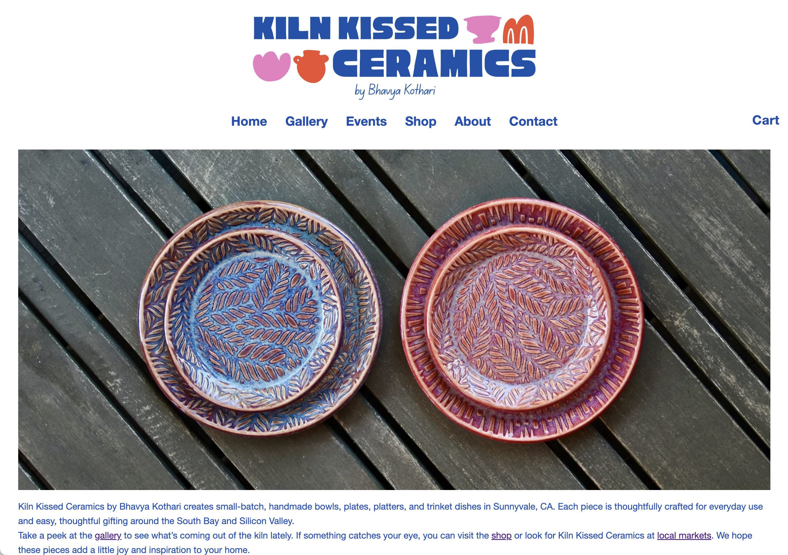

Role
UX & Visual Designer
Timeline
6 Months
Tools
Figma · Claude Code · Procreate · ChatGPT
Platform
Web (Responsive)
The Problem
Functional, but aesthetically sad.
The original site worked, you could browse and find information, but there was no real brand behind it. The header was a Canva template dressed up with mismatched clip-art icons, and the homepage photography was dim and unstyled, more like a quick phone snapshot than a product photo.
For a business built on handmade, one-of-a-kind pottery, the site read as generic. It didn't give the work any visual identity of its own, and didn't position the pieces as the premium, considered objects they actually are.

1
2
3
4
5
6
7
- 1 Logo lacks professionalism, clip-art icons and mismatched styles make the brand feel amateur and inconsistent
- 2 Navigation has no hierarchy, every item looks the same weight and Cart feels visually disconnected
- 3 Photography isn't doing the product justice, flat lighting and a busy background compete with the pottery
- 4 Dense, unscannable copy, long paragraphs with no formatting or visual breaks
- 5 No clear call to action, visitors don't know what to do next
- 6 Links lack emphasis, important links blend into the paragraph and get missed
- 7 Cart lacks prominence, small, alone, and separated from the nav
The Redesign
Rebranding the business, not just the site.
This wasn't a styling pass on the old site, it was a full rebrand. I defined a new visual identity for Kiln Kissed Ceramics from scratch, then rebuilt the product photography to match it, so every image positions the pottery as a premium, one-of-a-kind brand rather than a hobby shop.
- A clean wordmark and type system to replace the Canva header
- Product photography re-shot and re-aligned to the new brand aesthetic
- A dedicated shop with a working cart and checkout flow
- A gallery page to showcase one-of-a-kind pieces beyond what's for sale
- An events page so customers can find the studio at markets and pop-ups
The photography got the same treatment.
Same pieces, same table, shot and styled to look like a considered product rather than a snapshot.
After

And here's the site it all came together in.
New wordmark, new photography, and the shop, gallery, and events pages from the list above.
Try it, scroll and click around
Outcome
A brand that matches the craft.
Kiln Kissed Ceramics now looks like the premium, one-of-a-kind brand it always was, with an identity and photography that match the care put into every piece. Instead of relying on Instagram DMs and in-person sales alone, the business has a single branded site to direct customers to, with a clear path to browse, shop, and reach out.